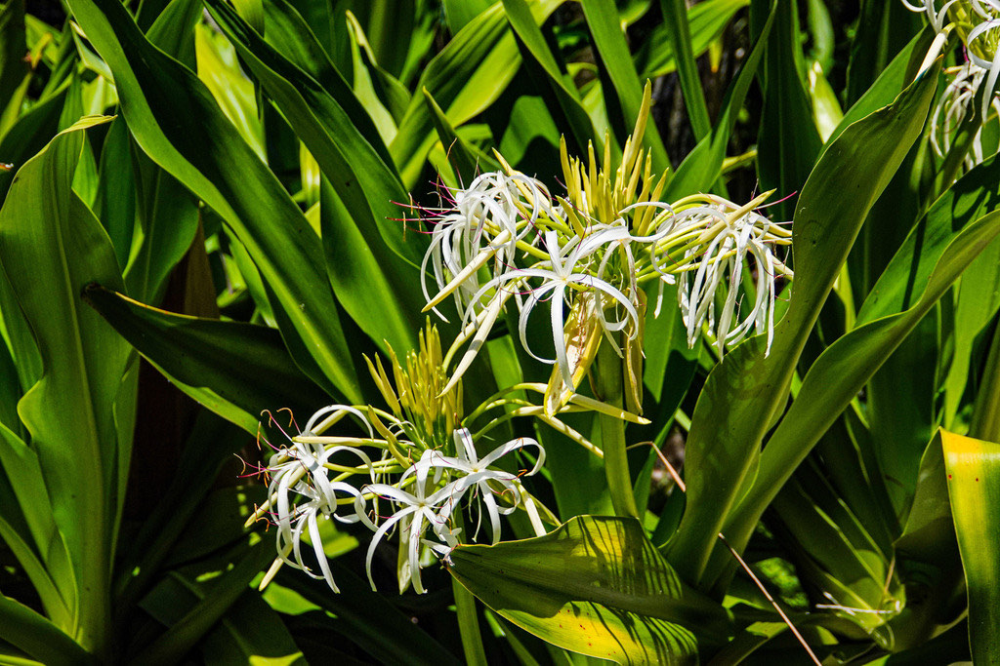

- One of the largest true bulbs in the plant kingdom — a single underground bulb can weigh up to 40 pounds.
- Its spidery white flowers are engineered for the night shift, releasing sweet fragrance at sunset to guide nocturnal Sphinx moths.
- Nicknamed cemetery lilies, these virtually immortal plants survive freezes, fires, and decades of neglect.
Native to tropical Asia, ranging from India and Sri Lanka through Southeast Asia to parts of northern Australia and many Pacific islands. It has been widely introduced and naturalized throughout tropical and subtropical regions worldwide, including coastal Florida.
- The Tree Crinum grows from some of the largest true bulbs in the plant kingdom — a single underground bulb can weigh up to forty pounds. Its spidery white flowers are engineered for the night shift, boosting their sweet fragrance at sunset and glowing under the moonlight to guide nocturnal Sphinx moths.
- Nicknamed cemetery lilies, these plants are virtually immortal — surviving freezes, fires, and total neglect to outlive the people who planted them by generations.
- Unlike most bulbs that rot in wet conditions, this plant thrives equally in bone-dry sand or fully submerged in standing water — an evolutionary anomaly that lets it colonize habitats most plants cannot.
- A striking purple-leafed cultivar named Queen Emma honors the 19th-century humanitarian queen consort of Hawaii, who grew them in her royal gardens.
- Ancient cultures across Asia and the Pacific used the plant medicinally — to treat skin ailments, soothe jellyfish stings, and even stun fish for easier harvesting.
The Tree Crinum's large white night-blooming flowers are engineered for Sphinx moths — the fragrance intensifies at dusk specifically to guide these primary pollinators.
The dense clumping foliage provides ground-level cover for lizards and small animals, and the heavy fruit drops attract wildlife foraging at the base.
While toxic to mammals, it supports a nocturnal pollinator community that few other park plants can match.
Mother bulbs continuously produce underground offshoots forming dense colonies.
Insect-pollinated flowers (mainly Sphinx moths) produce heavy fleshy seeds that drop and sprout directly on the soil.
Tall leafless stalks with clusters of highly fragrant white or pinkish spidery blooms with long purple stamens.
Fleshy lumpy irregular green pods containing unusually large soft green-to-tan seeds that germinate quickly without a hard shell.
Dramatic tall flower stalks in warmer months and heavy clusters of green fruit pods later in the season. Dense spreading clumps formed by underground pups.
Do not eat any part of this plant.
It contains lycorine and related alkaloids that cause vomiting, low blood pressure, heavy salivation, abdominal pain, and diarrhea.
Serious cases need medical attention, so seek care promptly if any part is swallowed.
The same alkaloids make it toxic to dogs — the ASPCA lists Crinum as causing vomiting, drooling, and depression.
Keep pets from chewing the leaves or bulb, and contact your vet if ingestion is suspected.


- © Rob Carr (CC-BY-NC), via iNaturalist
- © teschaim (CC-BY-NC), via iNaturalist
- © Joanne Walker (CC-BY-NC), via iNaturalist
- © Ruby Meador (CC-BY-NC), via iNaturalist